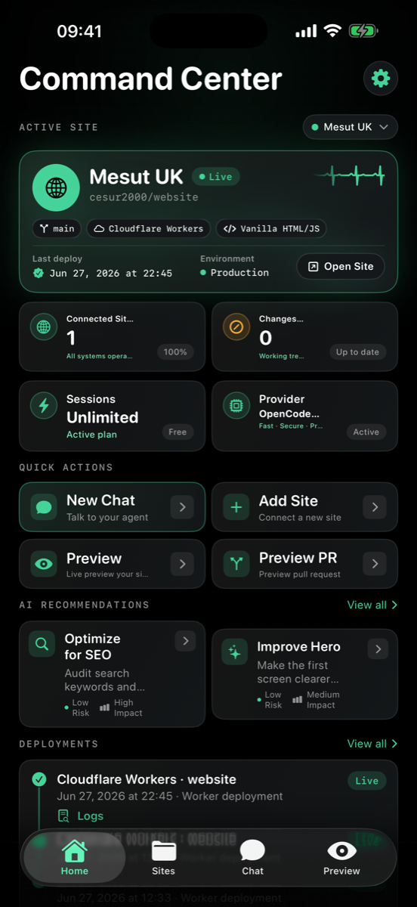

Chat-to-edit agent
Plain-English requests become real file changes, with every step shown as tool activity you can inspect.
Mac command center · iPhone + iPad companion
Describe a change in plain English. Review the diff. Approve the commit. Website Commander keeps every edit staged until you say ship — your keys stay in Keychain, and nothing goes live without you.
The loop
Website Commander turns website work into a reviewable pipeline. Nothing is committed or deployed until you explicitly approve it.
Tell the agent what you want in plain English — new section, new page, copy, layout, a fix.
See exactly which files change, side by side, before anything is written back to your repository.
Accept, edit, or reject. Only the changes you approve get committed — staged first, always.
Ship to your provider and follow the deployment status in chat until your change is live.
The command deck
Workspace, agent feed, and diff review stay in one window — no tab juggling between editor, terminal, and browser.

Capabilities
Plain-English requests become real file changes, with every step shown as tool activity you can inspect.
AI can make mistakes — Website Commander shows the diff, confirms the deploy, and keeps you in control.
Connect a repository once. Local clones, branches, and commits follow your GitHub workflow.
Render the site in place and inspect element, viewport, and user-agent behaviour without leaving the app.
Ship to GitHub Pages, Vercel, Netlify, and more — then track build status in the conversation.
The same workspace in your pocket: check state, review changes, and deploy from the field.
On the move
When you are away from the desk, the iPhone and iPad companion keeps the state of your sites close — review a staged diff, approve a commit, and watch the deployment land.
Get the iOS buildChoose your build
One workflow across the desk and the field. Every published build ships with release notes and checksums.
The full command center: local clones, agent runs, visual diffs, previews, and deployment status — installed as Website Commander.
ZIP and SHA-256 checksums live with each release. Mirror: mesut.uk/WebsiteCommander-1.0.8.dmg
Keep the command center in reach: check site state, review staged edits, and deploy from iPhone or iPad.
Sideload with AltStore, SideStore, or your own signing. SHA-256 checksums included in the release.
Questions
No. Every change is staged and shown as a side-by-side diff. Nothing is committed or deployed until you approve it.
GitHub tokens and provider keys are stored in the macOS or iOS Keychain — never in plain text, never written to the repository.
Website Commander connects directly to supported cloud providers with your own key, and can run compatible on-device models on supported hardware. Your requests go to the provider you configure — no extra middleman.
Any GitHub repository you can clone. Static sites and Jamstack projects work out of the box, with deployment integrations for GitHub Pages, Vercel, Netlify, and more.